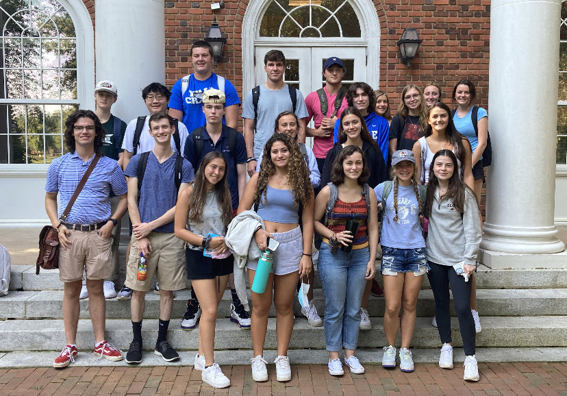

Porter-Gaud School
I went to POrter-Gaud for high school. It is in Charleston, SC and is a private school for K-12. I met my best friends and loved my time there! I was very involved in service at Porter-Gaud, this is a picture of me at Bicycles for Humanity.

Elon University
I am currently a sophomore at Elon and have loved every second of it! I am studying Stategic Communications and Marketing. I am involved in greek life at Elon and have met so many great people! This is my first ever class at Elon!
